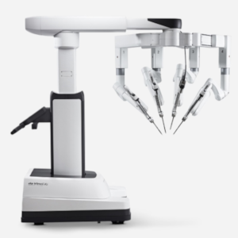
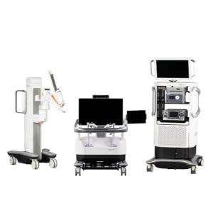
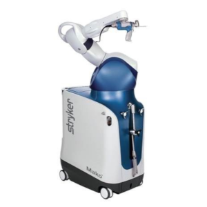

There are currently 3 companies that are laying the groundwork for this future: Intuitive Surgical, Medtronic, and Stryker.

Intuitive Surgical
Intuitive Surgical is an American biotechnology company that produces and manufactures robotic products designed to improve the clinical outcomes of patients through minimally invasive surgery. Best known for its da Vinci robot (performs procedure using robotic arms, a high definition 3D camera, and small instruments), Intuitive Surgical is currently the market leader in surgical robotics.

Medtronic
Next, Medtronic is an American-Irish medical device company that develops spinal and orthopaedic products. Namely, the Mazor X Stealth Edition, a robotic guidance platform that provides pre-operative and intra-operative planning including a customizable implant selection, optimal implant trajectories, and 3D analytics.

Stryker
Lastly, Stryker is an American multinational medical technology corporation that designs products for robotic arm assisted surgery. For example, the Mako, which combines 3D CT-based planning, AccuStop haptic technology (guides surgeons’ movements during surgery), and data analytics.